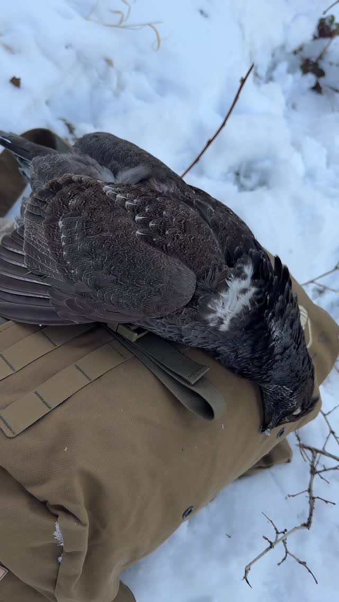

Episode 43 · January 01, 2026 · 1786
What I have learned from hunting Late Season Blue Grouse!

About This Episode
In this episode I talk about how to hunt late season grouse and where to find them. Hope this helps you all be successful!!
Questions about the training topics in this episode? Tyce works with bird dog owners and hunters through Utah Bird Dog Training. Reach out to work with him directly.
Resources & Links
- Kuranda Dog Beds — Elevated, chew-proof dog beds.
- Utah Bird Dog Training — Tyce's professional training services.
Transcript
Full transcript for Episode 43: What I have learned from hunting Late Season Blue Grouse!.
Tyce
Hey everyone, welcome to the Bird Dog Podcast. My name is Tyce. Today I want to talk about late season blue grouse hunting — what I've learned, how I find birds, and why these birds are worth targeting even when most hunters have moved on to other things.
Blue grouse, also called dusky grouse, are one of my favorite birds to hunt out west. They're big, the late-season plumage is outstanding, and they hold well for dogs when you find them in the right terrain. But the honest truth is that most hunters don't target them specifically. They encounter them incidentally — packing out an elk, glassing for deer, hiking a ridge — and if they have a shotgun along, they'll shoot a few. That's fine, but actually targeting these birds with a dog is a different and more satisfying experience.
Early season, September, I'll hunt blues before big game season ramps up. But the late season hunts are something I've only started doing more intentionally the last couple of years. I went out mid-December and shot two blue grouse and three or four ruffed grouse with a friend. Then on New Year's Eve I went back to a spot with my dog Brent and we limited out on blues and knocked down a couple ruffs as a bonus. Late season birds are worth chasing.
The most important thing is knowing where to look. Blues move higher as the season progresses — they'll be in the pines, on steep terrain, in country that takes some physical work to access. The steep, nasty spots are where most people don't go, which means the birds have less pressure. If you're willing to put in the hike, you can find birds.
The spot I hunted was one I found by accident. A few years back I was packing out my daughter's elk and I noticed blues flushing all around me — good numbers of birds in a place I'd never thought to hunt. I made a mental note, dropped a pin on OnX, and told myself I'd come back with dogs. That turned into one of my better late-season hunts. That's the tip: when you're out big game hunting and you bump into grouse, stop and mark it. Note the elevation, the timber type, the terrain. Those pins are worth a lot come December.
If you don't big game hunt but you have friends who do, ask them to keep an eye out. Big game hunters are covering a lot of ground in exactly the kind of country blues call home. A lot of elk and mule deer hunters are happy to share bird spots if they're not bird hunters themselves — they just walk right by them. Ask in advance: hey, if you see grouse out there, can you drop me a pin? You'd be surprised how many spots you can build a list from.
For the hunting itself: work with the terrain and the wind. Blues in the pines can be tight holders — they'll sit in the tree and let you walk almost underneath them. A dog that's working birdy in timber usually has a bird nearby even if you can't see it. Hunt slow, let the dog work, and be ready. Late season birds that flush often go downhill and glide a long way, which can make tracking them across steep country tricky. Mark your birds carefully and get to them quickly.
Ruffed grouse tend to be lower in elevation in the same general areas — river bottoms, aspen edges, mixed timber. Blues higher up, ruffs lower. If you're getting into both in the same day, you're in good country.
Late season blue grouse hunting takes more effort to find and more leg work to hunt than most upland birds, but the payoff is worth it. Big, beautiful birds, wild country, hard-working dogs. If you've been sleeping on them, make a plan this fall to get out and target them on purpose. You won't regret it. Thanks for listening.
About the Host
Tyce Erickson
Tyce Erickson is a professional bird dog trainer and the owner of Utah Bird Dog Training in Utah. For nearly two decades he has worked with pointing dogs, retrievers, and family hunting dogs — helping owners build dogs that are capable and enjoyable in the field. The Bird Dog Podcast is an extension of that work: honest conversations on training, hunting, breeding, and everything that goes into a life spent working dogs.
More About Tyce